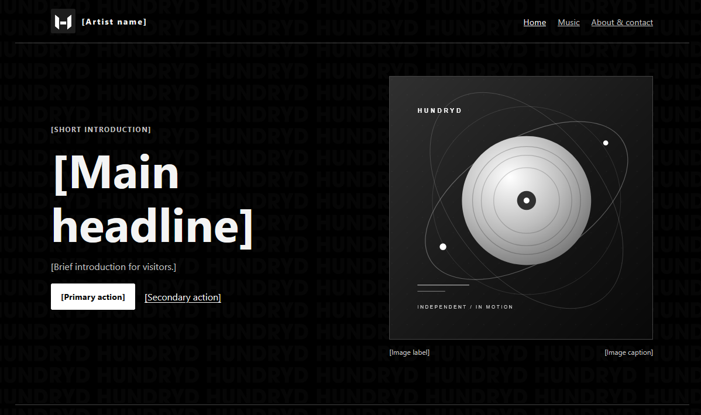
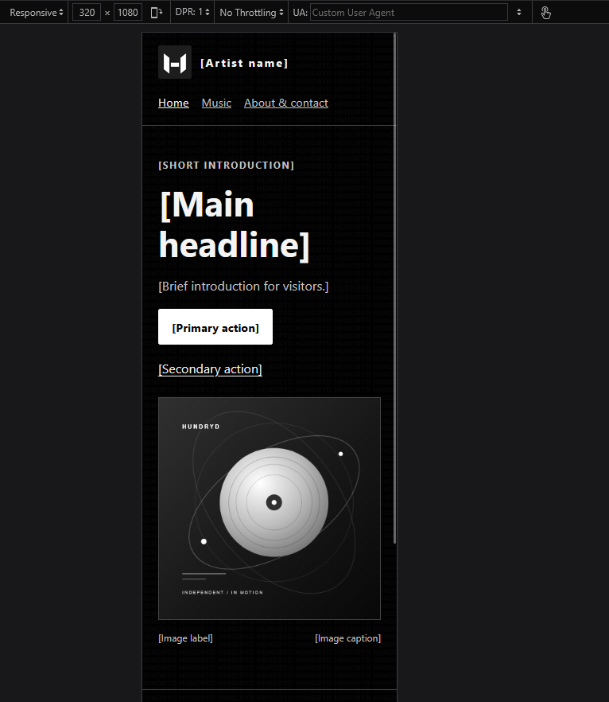

1. My project
- Who is it for?
- Listeners who want to find my music, people interested in working with me, and event organizers.
- What should visitors be able to do?
- Listen to my music, learn about me, and get in touch.
- My three pages
- Home introduces Hundryd. Music is for my releases. About & Contact shares a little about me and has a contact form.
- Repository and published site
- Not set up yet. I still need to upload the site, publish it, and add the public URLs here.
2. Requirement map
| Requirement | Where it is | Plan |
|---|---|---|
| Semantic pages and navigation | Header, navigation, main content, and footer on all three pages | New, shared layout |
| Design system | styles.css |
New, shared black-and-white styles |
| Figure and image | Home page cover, my logo and background on all pages | Use my supplied images, create monochrome cover art |
| Table | Music page release list | New, replace examples with my real releases |
| Form | About & Contact page | New, add my real email before publishing |
| SVG and shape | Cover art and decorative shapes | New, original monochrome SVG artwork |
| Positioning and layering | Home page cover and feature card | New, adjusted for small screens |
| Effects and motion | Shared CSS hover, focus, and reduced-motion styles | New, reduced-motion support included |
| Testing and documentation | This evidence page | Adapted from the supplied checkpoint template |
3. Release checks
- Pages and images: All three pages opened locally, my logo, background, and cover loaded.
- Small screen: The preview showed 381 pixels of page width with no page overflow. The table can scroll on its own. A true 320-pixel and 200% zoom check is still needed.
- Keyboard: The skip link and visible keyboard focus work.
- Contact form: Fields are labeled. Empty and invalid email entries are rejected; valid test entries pass. I still need to test with my real email.
- Motion and browsers: Reduced motion is supported and the site needs no JavaScript. A second-browser check is still needed.
- Publishing: Formal HTML/CSS validation and public-link checks are still needed after I publish the site.
4. Three findings and what I did
| Finding | Repair or next step | Retest |
|---|---|---|
| The cover artwork made the page too wide on small screens. | I fixed the image sizing and adjusted its decoration. | Reloaded the home page at the preview's 381-pixel width. The page fits with no horizontal overflow. |
| The Music page still has example releases. | I need to add my real song titles and listening links. | Pending my release details. |
| The contact page still uses a sample email address. | I need to replace it with an address I use and test sending. | Form validation works locally, real email delivery is not tested yet. |
5. Screenshots


6. Sources and AI disclosure
Reference: MDN navigation, MDN tables, MDN forms, and MDN reduced motion.
Images: I created the Hundryd logo and background.
AI disclosure: I used GitHub Copilot autocomplete while writing to speed up the development process.